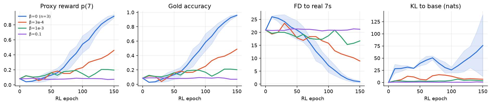
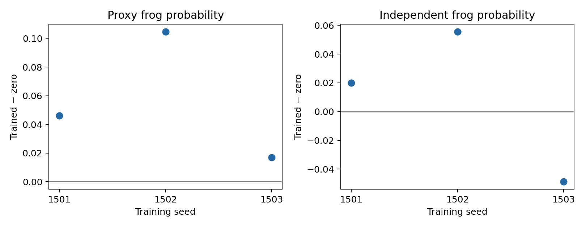

RL for diffusion models: what works, and what gets hacked
Controlled experiments with DDPO, reward-weighted regression, DRaFT, best-of-N and GRPO on four kinds of diffusion model: MNIST digits, video, RFdiffusion3 protein backbones and CIFAR-10 images. Everything ran on one 16 GB laptop, and every result is scored by an evaluator the reward never saw.
MNIST · 3 seeds, ±1%
proxy score 0.99 · reward hacked
3 seeds, 95% CI +27.7 to +37.3
The short version. Reinforcement learning can make a diffusion model do what you ask, as long as two things hold. The reward has to pay for exactly what you want, and the algorithm has to learn from the model's own samples rather than from the reward model's gradient. Break the first and RL finds the shortcut. Break the second and it attacks the reward model. When both hold, a 150-update GRPO run improved a video model by 32 points and lifted every class it was asked to draw.
Findings
- Methods that learn from their own samples are robust to a bad reward model; gradient-based fine-tuning is not. On MNIST with a weak proxy reward, DDPO, RWR and best-of-N track the true objective. DRaFT reaches a proxy score of 0.99 with 0.7% real 7s.
- Reward design decides the outcome before the algorithm does. log p and p share a maximiser, but only one of them produced 7s. A video reward that paid for "any legible digit" was satisfied by drawing 8s; paying for the requested digit turned the same GRPO run into +32 points on every digit.
- GRPO is a strong, general optimiser. The same machinery ran on video, RFdiffusion3 and a CIFAR-10 DDPM. On video it matched best-of-4 sampling at a quarter of the inference cost.
- RL only helps where the base model has room to improve. RFdiffusion3 already satisfies a geometric reward, so nine runs and two action designs moved nothing.
- A learned reward sets the ceiling. On CIFAR-10, GRPO raised the reward classifier's score six times more than an independent classifier's.
- Best-of-N is the baseline to beat. Best-of-64 reaches 99% real 7s at 3.2 nats of exact KL. RL earns its place by building that search into the weights.

Why RL for diffusion?
Diffusion models learn to imitate data. What we usually want is something else: images that match a prompt, that people rate highly, that compress well, or, in science, proteins that fold and molecules that bind. These targets are rewards, often non-differentiable, usually provided by a learned model, and never part of the pre-training loss.
Methods for closing that gap:
- DDPO treats denoising as an MDP and applies policy gradients.
- DPOK adds a KL penalty to the pretrained model.
- DRaFT / AlignProp back-propagate the reward through the sampler.
- Reward-weighted regression fine-tunes on high-reward samples.
- Best-of-N is the inference-time baseline.
The practical question is which of these improve the true objective and which just find the reward model's blind spots. You can't answer that with Stable Diffusion and an aesthetic predictor, because there is no ground truth to check against. So I built a setting with one.
Denoising as a decision process
A DDIM sampler with η = 1 is a chain of Gaussian transitions, which you can read as a policy:
The log-probability of each step is exact and cheap, even though the image likelihood is intractable. That is all a policy gradient needs:
The policy and the frozen reference share σ_t, so their per-step KL is closed-form. Summing it over the chain gives a path KL, which upper-bounds the KL between final images:
RWR instead does weighted denoising regression on its own samples. DRaFT back-propagates ∇ₓr through the last sampling step. All methods share the base model, a 20-step sampler, 64 trajectories per epoch, AdamW at 1e-5, and the same 256 fixed evaluation seeds.
GRPO, the group-relative variant used for recent text-to-image and text-to-video work, keeps this structure. It samples a group of outputs for the same prompt and normalises each reward against its own group. It then takes clipped steps on the per-step log-probabilities, with a KL penalty that anchors the policy to the pretrained model:
These are densities of the sampler's transitions, not likelihoods of the final sample, and that is all a policy gradient needs. The rest of this post is in two parts. Part 1 asks which family of RL algorithm to trust when the reward model is imperfect. Part 2 takes GRPO to four real diffusion models.
Which algorithm can you trust?
The practical question is which methods improve the true objective and which just find the reward model's blind spots. You can't answer that with Stable Diffusion and an aesthetic predictor, because there is no ground truth to check against. So I built a setting with one.
A testbed where Goodhart's law is measurable
- Base model
- 1.5M-param UNet DDPM on MNIST, unconditional, 10k steps. About 9% of samples are 7s.
- Proxy reward
- MLP trained on 1,000 labels (89.9% test). r = p(7 | x). Stands in for a learned reward model.
- Gold evaluator
- CNN on all 60k labels with augmentation (99.2%). Never used for training.
- Feature net
- Independent CNN (99.0%) for Fréchet distance to real 7s and diversity.
- Black-box reward
- JPEG file size, which has no gradient.
- Task
- Turn an unconditional digit generator into a 7 generator using only the proxy.
Same proxy reward, opposite outcomes

| Method (150 epochs) | proxy p(7) | gold acc | FD → 7s ↓ | diversity | path-KL |
|---|---|---|---|---|---|
| Pretrained base | 0.081 | 0.086 | 20.85 | 5.71 | 0 |
| DDPO, 3 seeds | 0.914 ± .022 | 0.958 ± .010 | 0.96 | 1.85 | 76 ± 64 |
| DDPO, 3 passes / batch (75 ep) | 0.983 | 1.000 | 1.78 | 1.10 | 76 |
| DDPO + KL β = 3e-4 | 0.460 | 0.488 | 8.93 | 4.49 | 7 |
| RWR | 0.336 | 0.316 | 32.26 | 3.93 | 697 |
| DRaFT-1, 3 seeds | 0.988 ± .003 | 0.007 ± .002 | 49.7 | 1.81 | 6,500 |
| Oracle: DDPO on gold | 0.825 | 0.914 | 1.62 | 2.31 | 68 |
| Best-of-16 (no training) | 0.739 | 0.749 | – | – | 1.8 exact |
| Best-of-64 (no training) | 0.962 | 0.989 | – | – | 3.2 exact |
The clearest view puts the optimised quantity against the true one:


Why the difference
DDPO's update is a weighted average of the score function over the model's own samples. It can only shift probability toward images the model already makes, and on those in-distribution images the proxy is roughly right. DRaFT's update is ∇ₓr: it asks the reward model which pixel direction raises the score and moves there. For an MLP, that direction is an adversarial perturbation. DRaFT is an adversarial attack on the reward model, amortised into the generator's weights.
Reward shaping comes first
My first DDPO run used r = log p(7|x), the classifier's own log-likelihood. It produced blobs: gold accuracy went from 9% to 0%. Changing only the reward to p(7|x) produced 96% real 7s.
The cause is advantage normalisation. With 9% 7s per batch, most of the variance in log p comes from the 91% that are not 7s, and among those, more ink makes log p(7) slightly less negative. A batch-normalised policy gradient follows the dominant direction of reward variance, which is ink. Best-of-N never notices, because it only looks at the top sample. With the bounded p, non-7s all score about 0, so the gradient comes from the 7s.
A monotone transform of the reward leaves the optimum unchanged, but it changes the optimisation path, and with it which optimum you reach.

The price of staying close

Best-of-64 reaches 99% gold accuracy at 3.2 nats of exact KL. The RL runs reach the same accuracy at 20–165 nats of path-KL. Part of that gap is measurement: path-KL is an upper bound, and the random-reward control shows tens of nats can be pure optimiser noise. The conclusion still matches what Gao et al. found for language models. If inference compute is cheap, best-of-N is very hard to beat. RL earns its place by building that search into the weights, here making sampling 64× cheaper.
Sample reuse, and a clip that never clips

With one pass per batch, DDPO-IS and DDPO-SF were bit-for-bit identical. DDPO averages each step's log-prob over pixels (784 here, about 16k latents in Stable Diffusion), which shrinks the log-ratio by that factor. Measured: after one update |ρ − 1| has a mean of 2e-4 and a maximum of 6e-3. After six passes the maximum is still under 0.01.
So the ε = 0.2 clip never fires, even with reuse. The 3× gain comes from extra gradient steps on slightly stale data. This also explains why the official DDPO configuration uses ε = 1e-4.
Black-box rewards
DRaFT can't run on JPEG file size; DDPO doesn't need a gradient. Rewarding incompressibility (+30% file size) gives thick, rough strokes and shifts samples toward high-edge digits, replicating DDPO's original findings. Rewarding compressibility finds the degenerate optimum: digits thin into faint strokes, then fade to solid black. The reward is satisfied exactly and the output is useless.

Gotchas that took most of the time
- The last denoising step dominates. With a 20-step cosine schedule ending at t = 0, the final stochastic step has σ ≈ 0.006. Its score term is about 100× larger than early steps, so it dominates gradient variance and the KL estimate (602 nats vs 7.7). Ending the stochastic chain at t = 20 fixed both with identical sample quality.
- Run a null-reward control. DDPO with random advantages moved 65 nats in 100 epochs and drifted slightly brighter. Every KL number should be read against that floor.
- Keep x̂₀ clipping. Removing it for cleaner gradients wrecked 20-step sampling (FD 1.3 → 149).
- Learning rate controls reward hacking. At 3e-5 instead of 1e-5, DDPO on the proxy went straight to blobs. Faster optimisation reaches off-distribution regions before the on-policy protection helps.
GRPO on video, proteins and images
Part 1 says: learn from your own samples, keep the reward honest, and keep an evaluator the optimiser never sees. Part 2 applies that recipe with GRPO to four real diffusion models. Each experiment holds out an independent evaluator, either a different classifier trained on disjoint data or a separate geometric measure. Every comparison is paired: each method starts from identical noise on the same test prompts, so differences are sample-for-sample.
Video: +32 points, and every digit improves
The model
I trained a video diffusion model from scratch: a 1.7M-parameter factorised space-time UNet, with per-frame 2D convolutions and per-pixel temporal convolutions. The data are freshly generated Moving-MNIST clips of 8 frames at 32×32. Each clip is one handwritten digit sliding in one of eight directions. The model is conditioned on two things, a direction and a digit, so a prompt reads "draw a 3 moving down-left". It trained for 12,000 steps, about three hours on the laptop, with classifier-free-guidance dropout on both labels.
Before any RL, the model had to pass a predeclared gate: draw the requested digit at least 40% of the time. At 8,000 steps it reached 36%, so I continued the same run to 12,000 steps and repeated the identical gate. It then reached 47.5%, and its clips moved in the requested direction 100% of the time. Both checks are recorded in the study's protocol.
Why the model is told which digit to draw
A first version of this experiment conditioned only on direction. The reward paid for correct motion and for "a legible digit". GRPO raised the independent success rate by 11.7 points, but it did so by drawing many more 8s: 109 to 150 of 256 test clips, against 64 before training. A loopy, high-contrast 8 is the easiest shape to call legible. Take the 8s out and the gain fell to 0–5 points.
The fix was to change what the reward pays for. The model now receives the digit as part of the prompt, and the reward only pays for that digit. Drawing an 8 when asked for a 3 now lowers the score.
The setup
- Policy
- The model's own DDIM sampler, η = 1, 40 steps. Every step is a Gaussian action with an exact log-probability.
- Reward
- 0.4 × a small CNN's probability of the requested digit, plus 0.6 × motion score (centroid direction × speed match). Multiplied by an ink guard that zeroes blank or saturated clips.
- Evaluator
- A second, different CNN trained on the other half of MNIST, plus a phase-correlation motion estimate. Neither shares code or data with the reward.
- Success
- The evaluator reads a legible digit, it is the requested digit, and it moves in the requested direction.
- Training
- 150 GRPO updates per seed, 4 prompts × 8 samples each, clipped ratios, KL to the pretrained model. Three seeds, about one hour each.
- Test
- 320 clips: 4 for each of the 80 direction × digit prompts, with identical starting noise for every method.
Results
| Method | Success | Δ vs pretrained (95% CI) | Worst digit |
|---|---|---|---|
| Pretrained | 49.1% | n/a | 34% |
| GRPO, seed 1 | 75.9% | +26.9 (+21.6, +32.2) | 53% |
| GRPO, seed 2 | 84.1% | +35.0 (+29.7, +40.6) | 69% |
| GRPO, seed 3 | 84.4% | +35.3 (+29.7, +40.9) | 72% |
| GRPO, 3 seeds pooled | 81.5% | +32.4 (+27.7, +37.3) | n/a |
| Best-of-4 sampling (4× cost) | 82.8% | +33.8 (+28.1, +39.4) | 56% |
| Guidance, w = 2 (2× cost) | 85.6% | +36.6 (+30.9, +42.2) | 75% |
All three seeds improved by 27 to 35 points. GRPO matches best-of-4 sampling while sampling at a quarter of the cost. Two of the three seeds land within two points of classifier-free guidance, which needs two network evaluations per step. Motion stayed perfect: 100% of clips moved the requested way before and after.

No shortcut this time
Every requested digit improved. The weakest digit went from 34% to between 53% and 72%, depending on the seed. The pretrained model also had a bias of its own: asked for 32 of each digit, it drew 68 clips the evaluator read as 8s. After GRPO that count was 28, 38 and 31, close to the requested 32. GRPO removed the 8 bias instead of exploiting it.


What it cost
Variety between clips for the same prompt fell from 0.47 to between 0.37 and 0.41 (mean pixel distance between clips for the same prompt), as is usual for KL-regularised RL on generators. Smoothed training reward climbed from 0.70–0.76 to 0.85–0.90 in every seed. One seed had a short dip near update 135 that recovered by update 150.

Proteins: RFdiffusion3 doesn't move
I fine-tuned the real, pinned RFdiffusion3 checkpoint (168M parameters, kept frozen) through a small low-rank adapter on its final coordinate-update layer. The policy was a stochastic version of RFD3's own sampler with explicit Gaussian actions and exact per-step densities. The reward favoured compact, well-bonded, clash-free backbones: −Rg/10 − 2·bond MAE − 10·clash fraction.
First study. Three GRPO seeds plus three controls (random advantages, a single-expert adapter, and late-noise-only actions), tested on 288 fresh backbones:
| Design length | Fresh backbones | Mean reward change (GRPO − untrained) |
|---|---|---|
| 24 residues | 72 | −0.00098 |
| 32 residues | 144 | −0.00063 |
| 40 residues | 72 | −0.00034 |
Second attempt. In the first study, actions moved only the Cα atoms, and RFD3's frozen denoiser pulled the rest of each residue back into place, undoing the action. So I let actions move every free atom, raised the learning rate from 3e-4 to 1e-3, concentrated actions on the low-noise range σ ∈ [0, 4] (the first study used [0.5, 32]), and trained for 60 epochs. Each seed was tested on 16 fresh paired designs:
| Seed | Actions on | Reward change | 95% CI |
|---|---|---|---|
| 11 | Cα only, lr 3e-3 | +0.0005 | −0.0001, +0.0014 |
| 21 | all atoms, lr 1e-3 | +0.0006 | −0.0001, +0.0013 |
| 22 | all atoms, lr 1e-3 | −0.0000 | −0.0008, +0.0006 |
Every backbone in every run passed the geometry checks, and no change was distinguishable from zero. A separate benchmark, refilling an 8-residue gap in crambin (PDB 1CRN), gave the same answer: a mean paired change of 0.00000005 in reward and 0.00002 Å in RMSD to the native structure.

Images: the reward rises, the independent score barely moves
On Google's pretrained CIFAR-10 DDPM, I used GRPO to make generated images more frog-like. The reward was one CIFAR classifier's frog probability. The independent judge was a second classifier trained on disjoint CIFAR data.
| Measure | Change after GRPO (3 seeds) |
|---|---|
| Training classifier's frog probability | +0.056 |
| Independent classifier's frog probability | +0.009 |
GRPO raised the reward six times more than the independent score. It learned what that particular classifier responds to, not what makes an image look more like a frog. With a weaker reward classifier (46% accurate), both scores stayed flat.

A real text-to-video model fits, barely
As a feasibility check, I ran GRPO on ZeroScope, a pretrained text-to-video diffusion model. The U-Net stayed frozen; a small output residual was trained, with eight frames and the prompt "A single red ball rolls from left to right across a plain floor." One optimiser update fit in 16 GB. On two fresh paired seeds the reward change was +0.040 and −0.011. The model rendered several red spheres instead of one ball. This shows the machinery runs end to end on a laptop. It is not a result, and scaling it up needs more memory than this machine has.
What ties it together
| Experiment | Reward went up? | Truth went up? | Why |
|---|---|---|---|
| MNIST · DDPO, weak proxy | Yes, 0.08 → 0.91 | Yes, 9% → 96% real 7s | Learns from its own samples |
| MNIST · DRaFT, weak proxy | Yes, 0.08 → 0.99 | No, 0.7% real 7s | Follows the reward model's gradient |
| Video · GRPO, requested digit | Yes, 0.78 → 0.91 | Yes, +32.4 points | Reward pays for exactly the target |
| Video · GRPO, any legible digit | Yes, 0.61 → 0.92 | +11.7, mostly 8s | Reward had a shortcut |
| Proteins · GRPO on RFdiffusion3 | No | No | Base model already satisfies the reward |
| Images · GRPO on CIFAR-10 | Yes, +0.056 | Barely, +0.009 | Exploited the reward classifier |
Across five diffusion models, RL always optimised the reward. Whether that became improvement was decided by two things: whether the algorithm stays on the model's own samples, and whether the reward pays for exactly the target.
- Give it a reward with a shortcut, and it finds the shortcut. Ink on MNIST, 8s on video, classifier quirks on CIFAR-10.
- Give it a reward gradient, and it attacks the reward model. DRaFT turned a 0.99 proxy score into 0.7% real 7s.
- Give it a reward the base model already satisfies, and it has nothing to do. RFdiffusion3 didn't move.
- Give it an honest reward and on-policy updates, and it delivers. +32 points on video, every class improved, at 1× sampling cost.
What I'd carry to a real system
- Prefer on-policy, score-function methods (DDPO, GRPO) when the reward model is learned. Use gradient-based fine-tuning only with robust or ensembled reward models and early stopping on a held-out evaluator.
- Always keep an evaluator the optimiser never sees: a second reward model, human raters, or for protein design an orthogonal structure predictor.
- Make the reward pay for the exact target, conditioned on the prompt, so that collapsing onto one easy mode costs reward.
- Treat reward shaping as a first-class hyper-parameter. Bounded rewards and group- or rank-normalised advantages focus the gradient on the tail you care about.
- Report KL against a null-reward control, and compare with best-of-N and classifier-free guidance at matched inference cost.
Next
- RFdiffusion3 with a reward it doesn't already satisfy, such as binding or designability from a folding model, and a larger trainable footprint
- GRPO combined with classifier-free guidance on the video model
- Diffusion-DPO in the same harness
- the proxy-vs-gold protocol on Stable Diffusion with LoRA, using a weak and a strong aesthetic model